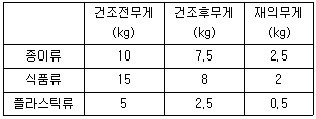
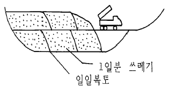
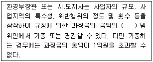

폐기물처리산업기사 (2004-03-07 기출문제)
1과목: 폐기물개론
1. 파쇄에 필요한 에너지를 구하는 법칙으로 고운파쇄 또는 2차분쇄에 잘 적용되는 법칙은?
- 도플러의 법칙
- 킥의 법칙
- 리테인거의 법칙
- 케스터너의 법칙
(정답률: 알수없음)

2. 쓰레기 선별방법 중 Trommel스크린 선별효율에 영향을 주는 인자에 관한 설명으로 알맞지 않은 것은?
- 스크린에 폐기물을 주입하기 이전에 분쇄기를 두는 것이 효과적이다.
- 회전속도는 어느정도 증가할수록 선별효율은 증가하나 그 이상이 되면 막힘현상이 일어난다.
- 경사도가 크면 효율은 증진되나 정확도는 떨어진다.
- 경험적으로 [ 임계회전속도 × 0.45 = 최적회전속도]로 나타낼 수 있다.
(정답률: 알수없음)
3. 폐기물 조성의 분석결과 함수율 75% 인 주방쓰레기 400㎏, 함수율 28% 인 종이류 380㎏, 함수율 10%인 연탄재 150㎏이 포함되었다. 이 폐기물의 수분함량은?
- 36.3%
- 39.2%
- 41.7%
- 45.3%
(정답률: 알수없음)
4. 청소상태의 평가법중 가로의 청소상태를 기준으로 하는 방법은?
- 지역사회 효과지수(CEI)
- 사용자 만족도 지수(USI)
- 청소상태 지수(TSI)
- 가로 서비스상태 지수(TCI)
(정답률: 알수없음)
5. 쓰레기를 적재한 차량의 무게가 6.75ton이고 공차 무게가 3.25ton이다. 이차의 적재함의 크기가 10m3, 차량적재계수가 0.7이라면 차에 실린 쓰레기의 밀도는(ton/m3)?
- 0.35
- 0.45
- 0.50
- 0.55
(정답률: 알수없음)
6. 다음의 표와 같은 조성의 폐기물 전체의 함수율과 습량 기준의 재의 함량은 각각 몇 % 인가?

- 30%, 16.67%
- 40%, 16.67%
- 30%, 18.67%
- 40%, 18.67%
(정답률: 알수없음)
7. 분별기술 중 각 물질의 전도율, 대전효과 및 대전작용을 이용하여 분리 및 선별하는 방법이며 Plastic, 고무와 종이, 섬유, 합성피혁 선별에 가장 유력한 것은?
- 자력분리
- 와전류분리
- 정전기분리
- 자성분리
(정답률: 알수없음)
8. 가구 평균가족수가 4인 인 75,000 세대 아파트 단지에서 쓰레기 수거상황을 조사한 결과가 다음과 같은 조건일 때 1인 1일 쓰레기 발생량은? (단, 수거용적 : 3500m3/주, 적재시밀도 700kg/m3)
- 약 0.6kg/인·일
- 약 0.8kg/인·일
- 약 1.2kg/인·일
- 약 1.6kg/인·일
(정답률: 알수없음)
9. 어느 도시쓰레기의 조성이 탄소 48%, 수소 6.4%, 산소 37.6%, 질소 2.6%, 황 0.4% 그리고 회분 5%일 때 고위발열량은? (단, Dulong식을 적용할 것)
- 약 4500kcal/kg
- 약 5000kcal/kg
- 약 5500kcal/kg
- 약 6000kcal/kg
(정답률: 알수없음)
10. 폐기물 발생량의 조사방법과 거리가 먼 것은?
- 원단위 분석법
- 적재차량 계수분석
- 직접 계근법
- 물질수지법
(정답률: 알수없음)
11. 우리나라 도시폐기물의 처리방법 중 그 비율이 가장 높은 것은?
- 소각
- 매립
- 재활용
- 해양투기
(정답률: 알수없음)
12. 함수율 90%인 슬러지 1kg을 농축하여 함수율이 50%로 되었다. 이때 제거된 수분양은 얼마(kg)인가?
- 0.5
- 0.6
- 0.7
- 0.8
(정답률: 알수없음)
13. 현재 우리나라에서 발생하는 생활폐기물 성분 중 가장 많이 발생하는 것은?
- 목재류
- 플라스틱류
- 연탄재류
- 음식쓰레기류
(정답률: 알수없음)
14. 적환장의 필요성과 가장 거리가 먼 내용은?
- 작은 규모의 주택들이 밀집되어 있을 때
- 불법투기가 발생할 때
- 작은 용량의 수집차량을 사용할 때
- 처분지가 수집장소로 부터 비교적 멀지 않을 때
(정답률: 알수없음)
15. 파쇄장치중 전단식 파쇄기에 관한 설명으로 틀린 것은?
- 파쇄시에 분진, 소음, 진동발생이 현저하고 폭발의 위험성이 크다.
- 이물질의 혼입에 대해 약하나 파쇄후 폐기물의 입도를 고르게 할 수 있다.
- 충격파쇄기에 비하여 대체적으로 파쇄속도가 느리다.
- 다른 파쇄기와 조합하여 사용할 수 있다.
(정답률: 알수없음)
16. 다음 중 LCA(Life Cycle Assessment)의 구성요소가 아닌 것은?
- 목적 및 범위의 설정
- 목록분석
- 수행평가
- 영향평가
(정답률: 알수없음)
17. Pipe line수송방법 중 공기에 의한 진공수송(흡인수송)의 경우 경제적인 수집거리 기준으로 적절한 것은?
- 0.5km
- 2km
- 5km
- 10km
(정답률: 알수없음)
18. 쓰레기의 발생량 예측방법과 가장 거리가 먼 것은?
- 다중회귀모델
- 물질수지모델
- 동적모사모델
- 경향법
(정답률: 알수없음)
19. 쓰레기 포장시 부피의 감소율은 통상적으로 60% 정도라면 이때 압축비는?
- 2.0
- 2.5
- 3.0
- 3.5
(정답률: 알수없음)
20. 인구 3,800명인 어느 지역에서 1인 1일 1.2kg의 폐기물이 발생되고 있다. 발생되는 폐기물을 1주일에 1일 수거하기 위하여 필요한 용량 8m3인 청소차량 댓수는? (단, 폐기물의 적재밀도는 0.3ton/m3, 차량은 1일 2회 운행함)
- 6대
- 7대
- 8대
- 9대
(정답률: 알수없음)
2과목: 폐기물처리기술
21. 다음 중 퇴비화를 위한 설비와 가장 거리가 먼 것은?
- 공기공급시설
- 수분조절시설
- 교반시설
- 가온시설
(정답률: 알수없음)
22. 합성차수막의 Crystallinity가 증가할수록 나타내는 성질로 틀린 것은?
- 열에 대한 저항성 증가
- 화학물질에 대한 저항성 증가
- 인장강도 감소
- 투수계수 감소
(정답률: 알수없음)
23. 분뇨를 소화처리함에 있어 소화 대상 분뇨량 Q=200m3/일 분뇨내 유기물 농도 Vs=20,000ppm라면 가스발생량은? (단, 유기물 소화에 따른 가스발생량은 500ℓ/kg-유기물, 유기물전량 소화, 분뇨비중은 1.0으로 가정함)
- 1000m3/일
- 1500m3/일
- 2000m3/일
- 2500m3/일
(정답률: 알수없음)
24. 희석포기방식에 있어서 분뇨 100㎘/일을 희석수 900㎘/일로 희석하여 8시간 포기한다. 이때 공급공기량은 포기조 용적당 1.5m3/m3-hr로 한다. 산기관 1개당 200ℓ /분 공기를 산기 할 수 있다면 필요한 산기관수는?
- 31개
- 42개
- 53개
- 64개
(정답률: 알수없음)
25. 쓰레기 퇴비장의 세균작용 이용법 중 어느 것이 가장 적당한가?
- 대장균 이용
- 혐기성 세균의 이용
- 호기성 세균의 이용
- 녹조류의 이용
(정답률: 알수없음)
26. 1 kg의 탄소를 완전연소시키는데 필요한 공기량을 부피로 나타내면 얼마인가?
- 5.67 Sm3
- 7.02 Sm3
- 8.89 Sm3
- 11.2 Sm3
(정답률: 알수없음)
27. 해안매립지의 연약지반 안정화공법 중 치환공법과 가장 거리가 먼 것은?
- 굴착치환공법
- 다짐치환공법
- 강제치환공법
- 폭파치환공법
(정답률: 알수없음)
28. 매립장에서 적용되는 점토와 합성수지계 차수막을 비교한 내용으로 틀린 것은?
- 점토는 급경사가 아닌 어떤 지반에도 적용이 가능하다.
- 점토는 바닥처리가 나쁘면 부등침하 및 균열위험이 있다.
- 합성수지계 차수막은 내구성이 높으나 열화위험이 있다.
- 합성수지계 차수막은 벤토나이트 첨가시 차수성이 좋아진다.
(정답률: 알수없음)
29. 유동상 소각로의 단점이 아닌 것은?
- 기계적 구동부분이 많아 고장율이 높다.
- 상(床)으로 부터 찌꺼기의 분리가 어렵다.
- 폐기물의 투입이나 유동화를 위해 파쇄가 필요하다.
- 운전비 특히 동력비가 높다.
(정답률: 알수없음)
30. 생활 폐기물을 위생매립처리를 하고자 한다. 그림과 같은 매립 공법의 이름은 무엇인가?

- Sandwich공법
- Baling system
- cell공법
- Trench system
(정답률: 알수없음)
31. 열분해공정이 쓰레기 소각처리에 비하여 갖는 장점으로 틀린 것은?
- 배기가스량이 적게 배출
- 황분, 중금속이 ash 중에 고정되는 확률이 큼
- 질소산화물의 발생량이 적음
- 지속적 산화분위기로 효과적 에너지 회수 가능
(정답률: 알수없음)
32. 대표적인 고화처리방법중 석회기초법에 관한 설명으로 알맞지 않는 것은?
- 가격이 매우 싸고 널리 이용되고 있다.
- 탈수가 필요치 않는 경우가 많다.
- pH가 낮아도 폐기물 성분의 용출가능성이 적다.
- 최종처분물질의 양이 증가한다.
(정답률: 알수없음)
33. 인구가 300,000인 도시의 폐기물 매립지를 선정하고자 한다. 이 도시의 1인당 폐기물발생량은 3kg/day 이었으며 폐기물의 Density는 Compaction한후 500kg/m3이었다. 매립지는 지형상 3m정도 굴착가능하다면 매립지 선정에 필요한 최소한의 면적(m2/year)은? (단, 지면보다 높이쌓지 않는다고 가정한다.)
- 109,500
- 219,000
- 338,000
- 409,000
(정답률: 알수없음)
34. 석회를 주입하여 슬러지중의 병원성 미생물을 사멸시키기 위해서는 최소한 pH를 얼마 이상으로 유지하는 것이 가장 적절한가? (단, 온도는 15℃, 4시간 지속시간 기준)
- pH 5
- pH 7
- pH 9
- pH 11
(정답률: 알수없음)
35. 침출수를 처리하는 방법중 펜톤산화에 대한 설명으로 틀린 것은?
- 철과 과산화수소를 이용한다.
- 고압이 요구되며 막힘현상의 문제가 있다.
- 난분해성 물질을 생분해성 물질로 변화시킨다.
- 슬러지 생산량이 많다.
(정답률: 알수없음)
36. 정화조로 유입되는 생분뇨의 BOD가 15,000ppm, 이 때의 염소이온 농도가 6,000ppm이며, 방류수의 BOD는 60ppm, 염소이온은 200ppm이었다. 이 정화조의 BOD 제거율은?
- 68%
- 78%
- 88%
- 98%
(정답률: 알수없음)
37. 슬러지를 퇴비화시킬 때 고온분해의 전반기에서 주가 되는 미생물은?
- Bacillus sp.
- Apergillus sp.
- P.Putida
- P.stutzeri
(정답률: 알수없음)
38. 굴뚝에 설치되며 보일러 전열면을 통과한 연소가스의 열로 보일러 급수를 예열하여 보일러의 효율을 높이는 장치는?
- 재열기
- 절탄기
- 과열기
- 공기예열기
(정답률: 알수없음)
39. 바닥상에서 연소재의 분리가 어렵고, 투입시에 파쇄가 필요하며, 내부에 매체를 간헐적으로 보충해야 하는 단점을 가진 소각로는?
- 화격자식 소각로
- 회전원통형 소각로
- 유동층식 소각로
- 다단로상식 소각로
(정답률: 알수없음)
40. 양이온 교환능력(meg/100g dry soil)이 가장 큰 토성은?
- 사토
- 사양토
- 식토
- 양토
(정답률: 알수없음)
3과목: 폐기물 공정시험 기준(방법)
41. 원자흡광광도법에 의한 수은의 측정시 금속수은을 환원시 키는 시약은?
- 염화제일주석
- 암모니아수
- 염산히드록실아민
- 과황산칼슘
(정답률: 알수없음)
42. 크롬을 원자흡광광도법에 의해 정량하고자 할 때 다음 중 알맞는 내용은?
- 유효측정농도는 0.1㎎/ℓ 이상으로 한다.
- 아세틸렌-일산화이질소는 철, 니켈의 방해는 많으나 감도가 높다.
- 정량범위는 장치 및 조건에 따라 다르나 357.9nm에서 2.0∼5㎎/ℓ 정도이다.
- 공기-아세틸렌 불꽃시에는 공존물질에 의한 방해 영향이 크므로 황산나트륨 1% 정도 넣어 측정한다.
(정답률: 알수없음)
43. 비소의 흡광광도법 시험에서 시료중에 아연을 넣어 발생하는 비화수소를 흡수시키기 위하여 무엇을 사용하는가?
- 염화제일주석용액
- 디티존사염화탄소용액
- 수산화나트륨용액
- 디에틸디티오카르바민산은피리딘용액
(정답률: 알수없음)
44. 용출시험 방법중 시료액의 조제에 관한 사항이다. 옳은 것은?
- 용매의 pH는 4.5~6.8으로 조절한다.
- 시료와 용매의 혼합비율은 1 : 20(W : V) 이다.
- 혼합액은 50㎖이상이 되어야 한다.
- pH를 조절하기 위해 염산을 사용한다.
(정답률: 알수없음)
45. 폐기물에 함유되어 있는 수분을 측정코자 한다. 증발접시에 시료를 넣은 후 건조시킬 때 건조시간 및 건조온도로 알맞는 것은?
- 2시간, 1⑤ ∼ 110℃
- 4시간, 1⑤ ∼ 110℃
- 30분, 600 ± 25℃
- 1시간, 600 ± 25℃
(정답률: 알수없음)
46. 시료의 채취방법에 관한 사항이다. 적절치 않은 것은?
- 액상혼합물 시료는 원칙적으로 최종지점의 낙하구에서 흐르는 도중에 채취한다.
- 고상혼합물 시료는 적당한 채취도구를 사용하여 한번에 일정량씩 채취한다.
- 시료의 양은 1회에 100g 이하씩 채취한다.
- 콘크리트 고형화물이 소형일때는 적당한 채취도구를 사용하여 한번에 일정량씩 채취한다.
(정답률: 알수없음)
47. 국내 용출시험방법에서 시료액의 조제가 끝난 혼합액을 상온, 상압에서 용출조작시 매분당 진탕횟수와 연속진탕시간은?
- 약 500회, 12시간
- 약 500회, 8시간
- 약 200회, 6시간
- 약 200회, 4시간
(정답률: 알수없음)
48. 폐기물공정시험방법에서 반고상 폐기물의 고형물 함량범위는?
- 5% 이상 15% 이하
- 5% 이상 15% 미만
- 15% 이상 25% 이하
- 15% 이상 25% 미만
(정답률: 알수없음)
49. 흡광광도법에서 사용되는 흡수셀과 적용파장의 범위가 일치하는 것은?
- 유리셀 : 가시부
- 광전도셀 : 자외부
- 석영셀 : 근적외부
- 플라스틱셀 : 원적외부
(정답률: 알수없음)
50. 원자흡광분석장치의 구성에 대한 배열이 올바르게 연결된 것은?
- 시료원자화부 - 광원부 - 분광부 - 측광부
- 시료원자화부 - 분광부 - 광원부 - 측광부
- 광원부 - 분광부 - 시료원자화부 - 측광부
- 광원부 - 시료원자화부 - 분광부 - 측광부
(정답률: 알수없음)
51. 구리의 흡광광도법 측정에서 추출용매로서 초산부틸 대신 사용할 수 있는 것으로 가장 적절한 것은?
- 아세톤
- 벤젠
- 알콜
- 에틸렌디아민테트라 초산이나트륨
(정답률: 알수없음)
52. 원자흡광도분석에서 분석시료중에 다량으로 함유된 공존원소와 목적원소와의 흡광도 비를 구하는 동시에 측정을 하는 검량선 방법은?
- 검량선법
- 내부표준법
- 표준첨가법
- 넓이백분율법
(정답률: 알수없음)
53. 유기물 등을 많이 함유하고 있는 대부분 시료의 전처리에 적용되는 분해방법으로 가장 알맞는 것은?
- 질산에 의한 유기물분해
- 질산-염산에 의한 유기물분해
- 질산-불화수소산에 의한 유기물분해
- 질산-황산에 의한 유기물분해
(정답률: 알수없음)
54. 가스크로마토 그래프의 정성분석에서 5~30분 측정하는 피이크의 유지시간은 반복시험을 할 때 몇 %의 오차범위 이내 이어야 하는가?
- ± 1%
- ± 3%
- ± 5%
- ± 10%
(정답률: 알수없음)
55. 순수한 물 500㎖에 HCl(비중 1.18) 100㎖를 혼합할 때 이 용액의 염산농도는 몇 %(W/W)이겠는가?
- 14.24%
- 17.4%
- 19.1%
- 23.6%
(정답률: 알수없음)
56. 이온전극법으로 NH4+, NO2-, CN-이온을 측정하려고 한다. 가장 적당한 이온전극은 어느 것인가?
- 유리막 전극
- 유화막 전극
- 고체막 전극
- 격막형 전극
(정답률: 알수없음)
57. 폐기물 시료의 원추 4분법에 관한 설명중 타당하지 않은 것은?
- 원추의 꼭지를 수직으로 눌러서 평평하게 만들고 이것을 부채꼴로 4등분한다.
- 마주보는 4등분의 두부분을 취하고 나머지의 반은 버린다.
- 반으로 준 시료를 절차를 반복하여 1/8 크기까지 줄인다.
- 분쇄한 대시료를 단단하고 깨끗한 평면위에 원추형으로 쌓아 올린다.
(정답률: 알수없음)
58. 다음은 총칙에 있는 내용이다. 설명 중 틀린 것은?
- '정확히 취하여'라 함은 규정된 양의 검체를 저울로 0.1mg까지 정확히 취하는 것을 말한다.
- '약'이라 함은 기재된 양에 대하여 ± 10% 이상의 차가 있어서는 안된다.
- 감압 또는 진공이라 함은 따로 규정이 없는 한 15mmHg이하를 말한다.
- 방울수는 20℃에서 정제수 20방울을 적하할 때 그 부피가 약 1mL 되는 것이다.
(정답률: 알수없음)
59. 흡광광도법에서 광원부에 대한 설명 중 틀린 것은?
- 광원으로 텅스텐램프, 중수소방전관을 사용한다.
- 중수소방전관은 자외부의 광원으로 사용한다.
- 텅스텐램프는 근자외부의 광원으로 사용한다.
- 전원부에는 광원의 강도를 안정시키기 위한 장치를 사용할 수 있다.
(정답률: 알수없음)
60. NaCN 5g을 정제수 2ℓ 에 녹이면 이 수용액 중 CN 의 농도는? (단, 원자량은 Na : 23, C : 12, N : 14이다.)
- 1,326mg/ℓ
- 1,689mg/ℓ
- 2,650mg/ℓ
- 2,977mg/ℓ
(정답률: 알수없음)
4과목: 폐기물 관계 법규
61. 자원재활용기본계획은 몇년마다 수립하는가?
- 3년
- 5년
- 10년
- 15년
(정답률: 알수없음)
62. 관리형 매립시설침출수의 오염물질배출허용기준으로 틀린 것은? (단, 청정지역 )
- 페놀류 함유량(mg/L) : 1 이하
- 아연 함유량(mg/L) : 1 이하
- 총인(mg/L) : 8 이하
- 색도(도) : 200 이하
(정답률: 알수없음)
63. 방치 폐기물처리이행보증보험의 보험금액 및 처리이행보증금의 산출근거로 알맞는 것은? (단, 폐기물처리업자,허용보관량을 초과하지 않은 경우)
- 폐기물의 종류별 처리단가 × 허용보관량 × 3.0배
- 폐기물의 종류별 처리단가 × 허용보관량 × 2.5배
- 폐기물의 종류별 처리단가 × 허용보관량 × 2.0배
- 폐기물의 종류별 처리단가 × 허용보관량 × 1.5배
(정답률: 알수없음)
64. 과징금의 사용용도와 가장 거리가 먼 내용은?
- 폐기물처리시설 기술연구 및 개발비용
- 광역폐기물처리시설의 확충
- 폐기물처리시설의 지도· 점검에 필요한 시설· 장비의 구입 및 운영에 소요되는 비용
- 폐기물처리기준에 적합하지 아니하게 처리한 폐기물 중 그 폐기물을 처리한 자를 확인할 수 없는 폐기물로 인하여 예상되는 환경상 위해의 제거를 위한 처리
(정답률: 알수없음)
65. 폐기물관리법 위반으로 과태료 부과시 불복이 있는 자의 이의 제기 기간으로 알맞는 것은?
- 처분의 고지를 받은 날 부터 7일이내
- 처분의 고지를 받은 날 부터 10일이내
- 처분의 고지를 받은 날 부터 15일이내
- 처분의 고지를 받은 날 부터 30일이내
(정답률: 알수없음)
66. 생활폐기물 보관에 관한 내용으로 알맞는 것은?
- 생활폐기물은 시,군,구의 조례가 정하는 방법에 따라 보관하여야 한다.
- 생활폐기물은 시,도지사 령이 정하는 방법에 따라 보관하여야 한다.
- 생활폐기물은 유역환경청장 또는 지방환경청장이 정하는 방법에 따라 보관하여야 한다.
- 생활폐기물은 환경부령이 정하는 방법에 따라 보관하여야 한다.
(정답률: 알수없음)
67. 지정폐기물의 수집, 운반, 보관기준 및 방법으로서 지정폐기물의 수집, 운반차량의 차체는 어느 색으로 도색하여야 하는가?
- 적색
- 황색
- 백색
- 청색
(정답률: 알수없음)
68. 폐기물 중간처리시설 중 "소각시설'' 에 해당되지 않는 것은?
- 고온소각시설
- 열분해시설(가스화시설 포함)
- 용융시설
- 고온용융시설
(정답률: 알수없음)
69. 폐기물처리 담당자등에 대한 교육을 실시하는 기관과 가장 거리가 먼 것은?
- 국립환경연구원
- 환경보전협회
- 환경관리공단
- 환경부장관이 지정하는 기관
(정답률: 알수없음)
70. 폐기물관리법에서 사용하는 용어의 정의로 틀린 것은?
- '처리'라 함은 폐기물의 소각, 중화, 파쇄, 고형화 등에 의한 중간처리와 매립,해역배출등에 의한 최종처리를 말한다
- '생활폐기물'이라 함은 사업장폐기물외의 폐기물을 말한다.
- '폐기물처리시설'이라 함은 폐기물의 중간처리시설과 최종처리시설로서 대통령령이 정하는 시설을 말한다.
- '재활용'이라 함은 폐기물을 재사용, 재생이용하거나 대통령령이 정하는 에너지회수활동을 말한다.
(정답률: 알수없음)
71. 폐기물처리시설의 사후관리업무를 대행 할 수 있는 곳은?
- 환경관리공단
- 시,도 보건환경연구원
- 환경보전협회
- 지방환경관리청
(정답률: 알수없음)
72. 지정폐기물의 분류번호가 '10-00-00'이라면 다음 중 어떤 폐기물에 해당되는가?
- 부식성 폐기물
- 감염성 폐기물
- 유독성 폐기물
- 특정시설에서 발생되는 폐기물
(정답률: 알수없음)
73. ( )안에 알맞는 내용은?

- 1/4
- 1/3
- 1/2
- 1/1
(정답률: 알수없음)
74. 매립지의 사후관리기준 및 방법에 관한 내용 중 토양조사 지점기준에 관한 내용으로 알맞는 것은?
- 매립시설에 인접한 토양오염이 우려되는 1개소 이상의 일정한 지점으로 한다.
- 매립시설에 인접한 토양오염이 우려되는 2개소 이상의 일정한 지점으로 한다.
- 매립시설에 인접한 토양오염이 우려되는 3개소 이상의 일정한 지점으로 한다.
- 매립시설에 인접한 토양오염이 우려되는 4개소 이상의 일정한 지점으로 한다.
(정답률: 알수없음)
75. 대통령령이 정하는 폐기물처리담당자가 환경부령이 정하는 교육기관에서 실시하는 교육을 받아야 하는 규정을 위반하여 교육을 받지 아니한 자에 대한 벌칙기준으로 적절한 것은?
- 50만원이하의 과태료에 처한다.
- 100만원이하의 과태료에 처한다.
- 200만원이하의 과태료에 처한다.
- 300만원이하의 과태료에 처한다.
(정답률: 알수없음)
76. 폐기물의 재활용신고서에 첨부하여야 하는 서류로 적합하지 않는 것은?
- 재활용신고대상임을 증명하는 서류
- 재활용 처리용량 및 처리공정도
- 재활용대상폐기물의 수집졺운반 및 보관계획서
- 폐기물의 재활용의 용도 및 방법설명서
(정답률: 알수없음)
77. 다음 중 소각시설에서 배출되는 다이옥신의 측정기관으로 적절하지 못한 것은?
- 환경관리공단
- 서울특별시 보건환경연구원
- 산업기술연구원
- 경기도 보건환경연구원
(정답률: 알수없음)
78. 기술관리인을 두어야 할 폐기물처리시설 기준으로 알맞지 않는 것은?
- 소각시설로서 시간당 처리능력이 600킬로그램 이상인 시설(감염성폐기물을 대상으로하지 않는 경우임)
- 압축·파쇄·분쇄 또는 절단시설로서 1일 처리능력이 100톤 이상인 시설
- 사료화·퇴비화 또는 연료화시설로서 1일 처리능력이 5톤 이상인 시설
- 멸균분쇄시설로서 1일 처리능력이 50톤 이상인 시설
(정답률: 알수없음)
79. 폐기물처리시설의 설치를 완료한 자가 검사기관에 검사를 의뢰할 때 검사신청서에 첨부하여야 하는 서류가 아닌 것은? (단, 폐기물처리시설이 매립시설인 경우)
- 설계도서 및 구조계산서 사본
- 시방서 및 재료시험성적서 사본
- 설치 및 장비확보내역서
- 유지관리계획서
(정답률: 알수없음)
80. 매립시설의 기술관리인 자격기준으로 알맞지 않는 것은?
- 수질환경기사
- 대기환경기사
- 폐기물처리기사
- 일반기계기사
(정답률: 알수없음)